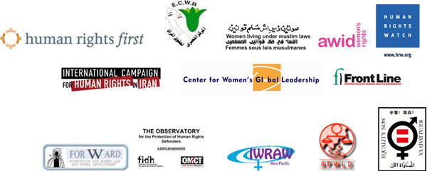

پذيرش > اخبار > ابراز نگرانی سازمان های زنان وحقوق بشر از فشار بر فعالان حقوق زن

 ابراز نگرانی سازمان های زنان وحقوق بشر از فشار بر فعالان حقوق زن ابراز نگرانی سازمان های زنان وحقوق بشر از فشار بر فعالان حقوق زن
18 آبان 1387 - - نسخه قابل چاپ

ما، امضا کنندگان این نامه ( سازمانهای زنان و حقوق بشر) نگرانی عمیق خود را در رابطه با افزایش فشار و آزار فعالین زنان مدافع حقوق بشر بیان می کنیم.
حكومت ایران در طی سه سال گذشته دست به سرکوب سیستماتیک و گسترده فعالان حقوق زنان زده است. پس از برخورد خشن و بی رحمانه با تجمع 22 خرداد 85، مقامات ایرانی بسیاری از مدافعان حقوق بشر زن را که در زمینه های مختلف برای ارتقاء برابری جنسیتی و حقوق بشر در ایران فعال بودند را بازداشت، تهدید، و بازجویی کرده و مورد پیگرد قرار داده است.
یکی از اهداف سرکوب اعضای کمپین یک میلیون امضا هستند. کمپین حرکتی اجتماعی است که از دو سال پیش برای ارتقاء برابری جنسیتی در قوانین ایران آغاز شده است. هدف کمپین گسترش آگاهی از قوانین تبعیض آمیز ایران علیه زنان با جمع آوری یک میلیون امضا در حمایت از لغو آن است.
مامورین اجرای قانون با مورد پیگرد قرار دادن حداقل چهل و پنج نفر از اعضای کمپین عکس العمل نشان دادند. اعضای کمپین برای نوشتن، برگزاری جلسات در منازل ( در حالی که این امکان را در فضای عمومی ندارند) و جمع آوری امضا محکوم شده اند.
حکومت به توقیف ارعاب و منع فعالین حقوق زنان از مسافرت ادامه داده است.
موارد جدید شامل:
محكوميت زينب پیغمبرزاده از اعضاى کمپین،
بازداشت عشا مومنی، دانشجو و عضو کمپین، ازبیست و چهار مهر تا کنون،
ممنوع الخروج شدن سوسن طهماسبی از اعضای کمپین، و
تفتیش منزل پرستو الله یاری از اعضای کمپین، و توقیف کامپیوتر و دیگر وسایل مرتبط با کمپین وی.
در روز 12 آبان سال 87 دادگاه زینب پیغمبر زاده را به یک سال حبس محکوم کرد. این حکم تا سه سال معلق شده است و پیغمبر زاده در این مدت باید خود را هر چهار ماه یک بار به وزارت اطلاعات برای ارائه گزارش معرفی کند. این حکم در ارتباط با تجمع 13 اسفند سال 86 است که وی به همراه سی و دو فعال حقوق زنان در تجمع صلح آمیزی در حمایت از فعالان حقوق زنان که در دادگاه بودند، بازداشت شد. همچنین پیغمبر زاده اولین عضو کمپین است که هنگام جمع آوری امضا بازداشت شده است.
در 24 مهر 87 دوفرد که خود را پلیس راهنمایی رانندگی معرفی کردند، عشا مومنی را به دلیل سبقت غیر مجاز بازداشت کردند. عشا مومنی با تابعیت ایرانی آمریکایی، دانشجوی فوق لیسانس دانشگاه ایالتی کالیفرنیا, نورثریج است که مشغول تحقیق بر جنبش زنان ایران برای پایان نامه ی فوق لیسانسش بود. او در بند 209 زندان اوین بازداشت است. همچنین مامورین اطلاعات به تفتیش خانه ی مومنی پرداخته و کامپیوتر و فیلمهای مصاحبه های فعالین کمپین یک میلیون امضا که بخشی از پروژه ی پایان نامه ی وی بود را توقیف کردند.
در روز 27 مهر سال 87 ماموران اطلاعات، پاسپورت سوسن طهماسبی را در فرودگاه امام خمینی توقیف کرده و او را ممنوع الخروج کردند. در همان روز خانه ی طهماسبی مورد تفتیش پنج مامور قرار گرفت و کامپیوتر، کتابها و برخی وسایلش ضبط شد. این چهارمین بار است که سوسن طهماسبی ممنوع الخروج می شود و با وجود بازجویی های مکرر، هنوز دلیل ممنوع الخروجی را به وی ابلاغ نکرده اند. سه روز پیش طهماسبی در اداره ی اطلاعات دادگاه انقلاب، پنج ساعت مورد بازجویی قرار گرفت.
در روز 27 مهر 87 دو مامور کلانتری گیشا خانه ی پرستو الله یاری را در زمانی که او در سر کار بود تفتیش کردند. مامورین پلیس لبتاپ، سی دی ها، کتاب ها، آلبوم های عکس و دیگر وسایل مرتبط با کمپین اورا توقیف کرده و احضاریه ای را به مادرش دادند. سپس مامورین امنیتی الله یاری را تا دادگاه انقلاب همراهی کرده و در آنجا بازپرس پرونده او را مورد بازجویی قرار داد. روز قبل الله یاری و دیگر اعضای کمپین دیداری در پارک لاله تهران داشتند که پس از دستور پلیس متفرق شدند.
ما شدیدا به ادامه ی فشار بر این فعالین که به خاطر فعالیت صلح آمیز برای ارتقاء حقوق زنان مورد آزار قرار گرفته اند اعتراض داریم.
ما از دولت ایران می خواهیم که به آزادی اجتماع و تجمع این فعالین احترام بگذارد. این حقوق جزئی از اعلامیه جهانی حقوق بشر ومیثاق بین المللی حقوق سیاسی و مدنی است که ایران نیز به آن پیوسته و قانونا ملزم به پیروی از آن است.
ما مشخصا تاکید می کنیم که این اعمال مقامات ایرانی نقض مستقیم چندین ماده از اعلامیه مدافعان حقوق بشر، منتشر شده در مجمع سازمان ملل در 9 دسامبر 98 است. به طور مشخص: ماده 1 ( به رسمیت شناختن هر شخص، فردی یا گروهی، که برای ارتقاء و محافظت از حقوق بشر تلاش می کند)، ماده 5 ( به رسمیت شناختن حقوق مدافعان در دیدار و گردهمایی صلح آمیز، برای پیوستن و یا شکل دادن سازمان های غیر دولتی، انجمن ها و گروه ها، و رابطه با دیگر سازمان های غیر دولتی و یا خارجی)، و ماده 9 (مانع نشدن و دادن امکان مذاکره به مدافعان با افراد در سطح بین المللی در رابطه با حقوق بشر).
در 3 آبان 87، ایران حمایت خود را از محافظت از مدافعان حقوق بشر با حضور فعال در دیالوگی تعاملی در مجمع عمومی سازمان ملل و دررابطه با گزارش مخصوص سازمان ملل از مدافعان حقوق بشر اعلام کرد. ولى در دهمين سالگرد اين اعلامیه، دولت ایران اعلامیه و نفس آن را نقض مى كند.
اگر دولت ایران می خواهد به تعهداتش در پیمان نامه های بین المللی که عضو آن است پایدار بماند، سازمان های جامعه مدنی باید اجازه مراوده آزادانه و مسافرت برای شرکت در کنفرانس های بین المللی را داشته باشند. از این روخواسته هاى ما از دولت ایران چنین است:
لغو محکومیت زینب پیغمبر زاده
آزادی عشا مومنی و برگرداندن وسایلش
بازگرداندن پاسپورت و دیگر وسایل ضبط شده ی سوسن طهماسبی و رفع ممنوع الخروجی وی که بارها اعمال شده
بازگرداندن وسایل پرستو الله یاری به وی و رفع اتهام از وی
پایان دادن به فشار و پیگرد تمام فعالان و مدافعان حقوق بشر در ایران که شامل اعضای کمپین یک میلیون امضا نیز می شود.
از شما به خاطر توجه به این مشکلات سپاسگزاریم.
متیوایستون- مدير برنامه مدافعان حقوق بشر
حقوق بشر نخست
سانیلا آبیسكارا- مدير اجرايى
دیده بان بین المللی فعالیت حقوقی زنان، آسیا اقیانوس آرام
نهاد ابول کمسان- مدير اجرايى
مركز مصرى براى حقوق زنان
سهير بالحسن - مدير
فدراسیون بین المللی حقوق بشر
تاینا بین- ایمه- مدير اجرايى
برابری اکنون
شارلوت بانچ- مدير اجرايى
مرکز سراسری رهبری زنان
سیندی کلارک- مدير موقت
انجمن حقوق زنان در توسعه
فریدة ضيف – بخش حقوق زنان
دیده بان حقوق بشر
لینسی فرنسیس- هماهنگ كننده محلى
مجمع آسیا، اقیانوس آرام در توسعه زنان
هادی قائمی- هماهنگ کننده
کمپین بین المللی حقوق بشر در ایران
مری لالور- مدير
خط اول- بنیاد بین المللی برای محافظت از مدافعان حقوق بشر
ویرادا سومسوادى- رئيس
بنیاد زنان، توسعه ی روستایی و حقوقی
اریک اسکات- دبير كل
سازمان جهانی علیه شکنجه
زنان تحت قوانین اسلامی- شبکه اتحاد بین الملل
ارسال به
بالاترین
،
توییتر
،
فریندفید
،
فیسبوک
در همين بخش :
 پروین ذبیحی برنده جایزه حقوق بشری سازمان غيردولتى اتريشى سودويند شد پروین ذبیحی برنده جایزه حقوق بشری سازمان غيردولتى اتريشى سودويند شد
پخش کارت پستال و بروشور در روز جهانی زن در تهران
تمدید زمان برای امضای بیانیهی جمعی از فعالان زن به مناسبت هشت مارس
مجوزی که در نطفه خفه شد
بیش از 2000 امضا در اعتراض به تبعیض های آموزشی به مجلس تحویل داده شد
ديگر بخش ها :
طرح یک میلیون امضا
|
مقالات
|
سایت نوشته ها
|
اخبار
|
گزارش كمپين
|
گفت و گو
|
علیه سکوت
|
كوچه به كوچه
|
نامه های شما
|
گزارش ویژه
|
گفتگو با اعضا
|
ویژه سالگرد کمپین
|
تصویر برابری
|
دل آرام علی
|
تریبون
|
مقالات
|
تاریخ شفاهی
|
خارج از چارچوب
|
کتابخانه
|
درباره کمپین
|
کمپین در شهرها
|
کمپین در بند
|
صدای تغییر
|
ویژه 22 خرداد
|
لایحه حمایت از خانواده
|
گالری
|
عشا مومنی
|
امیر یعقوبعلی
|
خدیجه مقدم
|
راحله عسگری زاده و نسیم خسروی
|
پروین اردلان،جلوه جواهری، مریم حسین خواه، ناهید کشاورز
|
زینب پیغمبرزاده
|
سعیده امین، سارا ایمانیان، محبوبه حسین زاده، ناهید کشاورز و همایون نامی
|
احترام شادفر
|
نسیم سرابندی زاده،فاطمه دهدشتی
|
وبلاگ مهمان
|
پرونده خرم آباد
|
دستگیری ها
|
مریم مالک
|
پرستو اللهیاری
|
مهرنوش اعتمادی
|
سمیه رشیدی
|
Other Languages
|
همراهان
|
«فراخوان کمپین ده روز با بهاره هدایت»
| English
|